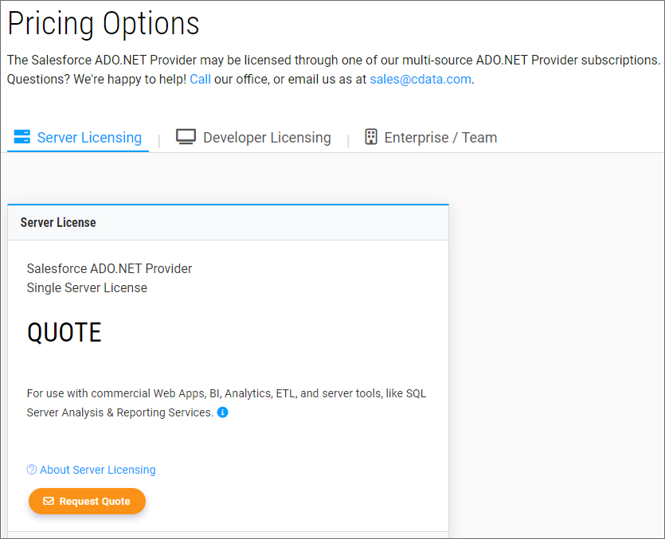
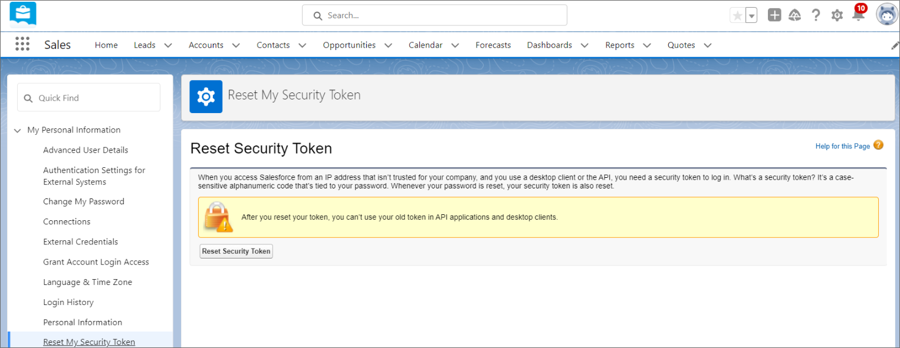
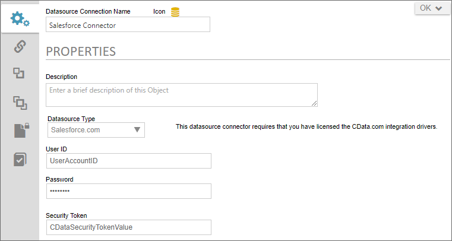
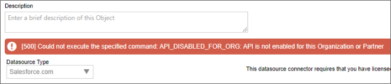

Customers who wish to use data connections to Salesforce, using the appropriate Datasource object, must first obtain an appropriate Open Data (oData) connector to SalesForce from CData. Salesforce oData licenses can be purchased from CData's web site, using the Server Licensing tab.

Once the license has been purchased, you will receive the appropriate installation and licensing files. In addition, your Account Settings section of the CData web site will give you access to a Security Token for account, as well as the ability to create or reset Security Tokens.

You must have a valid Security Token from CData in order for your Salesforce Data Source object to connect with your data. In addition you must also request API Access from Salesforce, separately, since API Access is disabled by default in the Professional Edition of SalesForce. Please refer to the SalesForce web site for more information about requesting API Access.
Depending on whether you're a Cloud or On-Premise customer, the installation process will differ.
Cloud customers must provide BP Logix with all of the installation and licensing files received from CData. BP Logix will install the license(s) on the appropriate cloud installation(s) for you.
On-Premise customers will have to install the connector on their own Process Director servers, using the process below.
C:\Program Files\CData\CData ADO.NET Provider for Salesforce 2023\lib\netstandard2.0.C:\Program Files\CData\CData ADO.NET Provider for Salesforce 2023\lib\netstandard2.0 to the bin folder of your Process Director website folder, which for a default installation, will be C:\Program Files\BP Logix\Process Director-5.44.600\website\bin.configuration\system.data\DbProviderFactories:<add name="CData ADO.NET Provider for Salesforce" invariant="System.Data.CData.Salesforce"
description="CData ADO.NET Provider for Salesforce"
type="System.Data.CData.Salesforce.SalesforceProviderFactory, System.Data.CData.Salesforce,
Version=15.0.0.40, Culture=neutral, PublicKeyToken=cdc168f89cffe9cf" />
<add name="CData ADO.NET Provider for Salesforce 2023 (.NET Standard 2.0)"
invariant="System.Data.CData.Salesforce"
description="CData ADO.NET Provider for Salesforce 2023 (.NET Standard 2.0)"
type="System.Data.CData.Salesforce.SalesforceProviderFactory, System.Data.CData.Salesforce" />
Restart the Process Director App Pool in Internet Information Server (IIS).
To create a Salesforce Data Source object, navigate to the folder location where you'd like the Data Source object to reside. BP Logix recommends that Data Sources be created in a [Data Sources] folder at the root of your installation partition.

If you have not requested API Access from SalesForce, an error message will be displayed.

You'll need to be granted API Access before continuing, in order to successfully test and use your SalesForce Data Source.
To see more information about different Datasource Types and their configuration, please refer top the following topics: